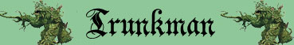
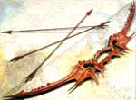

|
|
Climate/Terrain | Foreste |
| Frequency | Rare | |
| Organization | Pack | |
| Activity Cycle | Any | |
| Diet | Carnivore | |
| Intelligence | Low Intelligence (5-7) | |
| Treasure | None | |
| Alignment | Neutral Evil | |
| No. Appearing | 1-3 | |
| Armor Class | 3 | |
| Movement | 12 | |
| Hit Dice | 4+4 | |
| Thac0 | 16 | |
| No. of Attacks | Ramo (punta) /Ramo (punta) | |
| Damage / Attacks | 1d6+1 / 1d6+1 | |
| Special Attacks | Penetrazione Profonda | |
| Special Defenses | Resistenza a Botta, Punta e Freddo, Mimetismo | |
| Special Weakness | Vulnerabilità al fuoco | |
| Magic Resistance | Nessuna | |
| Size | Medium | |
| Morale | Elite (14) | |
| XP value | 350 |
Descrizione
I Trunkman sono una razza malvagia di mostri vegetali. Come indica il loro nome, il corpo di queste creature è costituito interamente da tronco d'albero dalla forma umanoide. Non vivendo di fotosintesi, infatti, questa creatura non necessita di fogliame. Sul suo tronco, però, sorgono colonie di muschi, funghi ed altri parassiti vegetali la cui presenza aiutano queste creature a mimetizzarsi nella foresta.
Combat
I Trunkman
attaccano con i loro due arti superiori che terminano in rami appuntiti e
particolarmente resistenti capaci di penetrare in profondità nel corpo delle
loro vittime. Ogni attacco di questo tipo provoca 1d6+1 danni da punta.
PENETRAZIONE PROFONDA: Ogni
volta che un Trunkman colpisce con un suo ramo una vittima e provoca il massimo
danno possibile effettuando un tiro naturale pari a 6, costui avrà una
possibilità pari ad 1-5 su 1d10 di penetrare a fondo nel corpo della vittima
provocando un danno supplementare pari ad 1d6 danni da punta
ulteriori. Questo effetto non si applica nei confronti delle creature
incorporee.
RESISTENZA ALLA BOTTA: La corteccia del Trunkman è particolarmente resistente ai danni da botta, per tale motivo il Trunkman subirà solo la metà (per difetto) di tutti i danni da botta provocati nei suoi confronti.
RESISTENZA ALLA PUNTA: La
corteccia del Treant è particolarmente resistente ai danni da punta, per tale
motivo il Treant subirà solo il 75%
(per difetto) di tutti i danni da punta
provocati nei suoi confronti.
RESISTENZA AL FREDDO: La
corteccia del Trunkman è particolarmente resistente ai danni da freddo, per tale
motivo il Trunkman subirà solo la
metà (per difetto) di tutti i danni da freddo
sia di natura magica che naturale provocati nei suoi confronti.
MIMETIZZAZIONE SUPERIORE [FORESTE] (Superior Special Ability): Quando la creatura resta ferma è capace di mimetizzarsi nell'ambiente indicato. In particolare, fino a che resta ferma costei non potrà essere notata dalle creature che passino ad una distanza superiore a 30 metri ed otterrà una possibilità pari al 95% di non essere notata dalle creature che le passano ad una distanza inferiore. Utilizzare quest'abilità richiede un'azione complessa dalla durata dell'intero round e la creatura potrà risultare, quindi, nascosta solo alla fine del round. Per restare nascosta la creatura non potrà compiere altre azioni complesse e non potrà spostarsi (si faccia eccezioni per piccoli movimenti effettuati sul posto). Si noti che questa abilità non può essere utilizzata nei confronti di chi ha già visto la creatura fino a che questa non esce dalla sua linea visiva. Si noti che il tiro percentuale è effettuato segretamente dalla creatura un'unica volta ed il suo risultato sarà applicato a qualsiasi soggetto fino a che costei non si sposti od agisca diversamente. Il risultato di questo tiro si considererà incrementato di una penalità del +10% al fine di verificare se la creatura si è nascosta nei confronti di soggetti dotati di Sensi Superiori o che posseggano la competenza Observation ed abbiano superato una prova nella stessa (+15% nei confronti delle creature che abbiano entrambe le caratteristiche). Il risultato del tiro si considererà incrementato di un'ulteriore penalità del +25% al fine di verificare se la creatura si è nascosta nei confronti di soggetti dotati di infravisione (che sia attiva e sempre che la creatura si trovi all'interno del suo raggio). Qualora la creatura risulti nascosta con successo alla vista dei suoi avversari ed agisca improvvisamente costei imporrà loro una penalità di -3 alla relativa prova sulla sorpresa.
VULNERABILITA' AL FUOCO: La
corteccia del Treant è particolarmente sensibile ai danni da fuoco, per tale
motivo il Trunkman subirà il 125% di tutti i danni da fuoco
(calcolato per eccesso) sia di natura magica
che naturale provocati nei suoi confronti.
Habitat/Society
I Trunkman vivono solitari od in piccoli gruppi e non sono creature stanziali. Questi esseri, infatti, vagano per le foreste spostandosi continuamente in cerca di prede che, una volta uccise, divorano per assumere il nutrimento necessario al loro sostentamento. I Trunkman non sono interessati a recuperare tesori e lasciano al suolo eventuali oggetti posseduti dalle loro vittime.
Ecology
I Trunkman in
quanto carnivori, amano cibarsi delle carni delle creature a sangue caldo. Non
disegnano anche la carne di umani e semi-umani. Chi possiede la
competenza bowyer/fletcher e porta con se il relativo kit da arciere può
provare, superando una prova con -2 di penalità sulla stessa, a recuperare da
queste creature 1d2 pezzi del seguente legno speciale che possono essere utilizzati
per la creazione degli archi (per ogni creatura uccisa è possibile effettuare
un'unica prova che richiede 1 turno di lavoro):
Legno di Trunkman
Valore 150 g.p., Modifica check: -1,
Utilizzabile fino ad archi superbi
L'arco prodotto è particolarmente ruvido e nodoso al tatto. Quest'arco non dona
di per sé particolari benefici a chi lo utilizza ma può essere incantato con un
particolare minor enchantment.
Il valore finale dell'arco prodotto cresce del +15%
| OGGETTO | Bow of Trunkman Penetration |
| ORIGINE | MAGICA |
| POTENZA | Greater Minor Enchantment (375 xp, 3000 gp) |
| SCUOLA DI MAGIA | ENCHANTMENT |
|
DESCRIZIONE
 |
Possono essere incantati con questo incantamento minore tutti gli archi prodotti con il legno di Trunkman. Gli archi così incantati possono scagliare frecce in grado di penetrare più in profondità nel corpo dei loro nemici. Ogni volta che l'arciere che utilizza questo arco colpisce una creatura con una freccia e tira il massimo risultato possibile con il dado di danno, il colpo potrà ferire l'avversario molto più a fondo. In questo caso, infatti, l'arciere avrà una certa possibilità pari ad 1-5 su 1d10 di poter ritirare nuovamente il medesimo dado di danno ed aggiungere, quindi, esclusivamente il risultato puro effettuato con il dado (senza l'aggiunta, quindi, di alcun tipo di modificatore) al danno provocato. Tale beneficio non si cumula con quello simile previsto dal talento Letalità del Cecchino della classe talentuosa Archer, qualora però un Archer di almeno 9° livello utilizzi quest'arco costui riceverà una possibilità pari ad 1-6 su 1d10 di penetrare a fondo la sua vittima. Si noti che questo effetto non si applica nei confronti delle creature incorporee. |